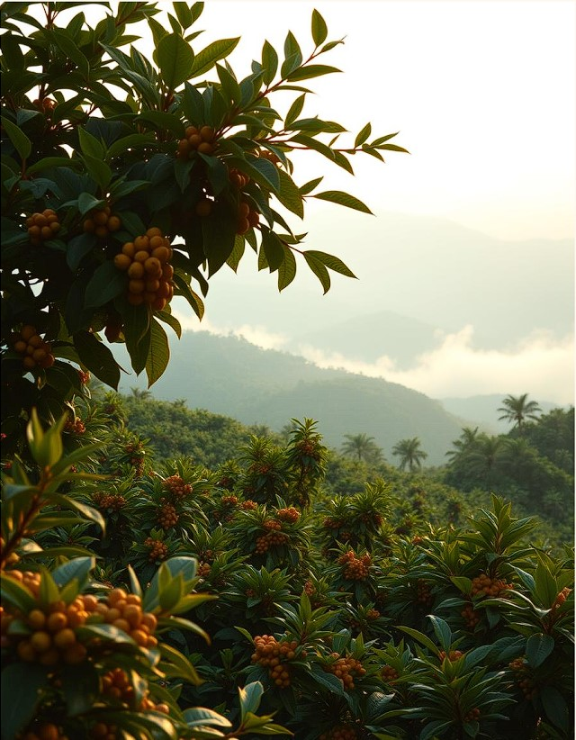

Kurōna
Crafted Coffee
Pasión en cada taza.
Descubre el sabor único del café artesanal.
En Kurōna, cada grano es seleccionado con cuidado y tostado a la perfección. Explora nuestra variedad de mezclas y disfruta de una experiencia inigualable.
